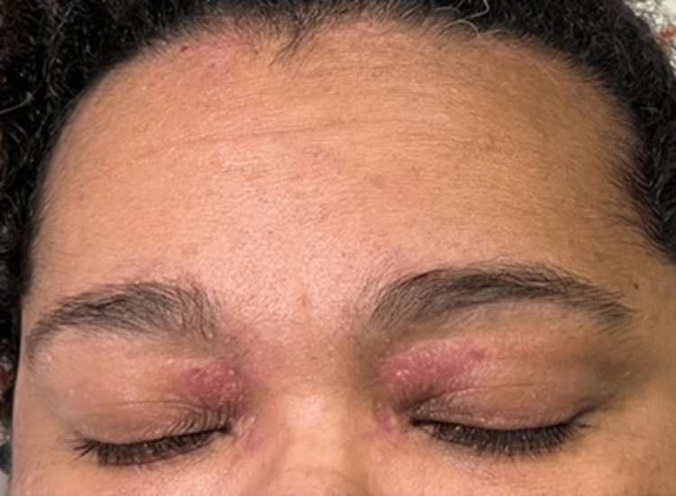

Página 10 · E4
O que é
Dermatomiosite (DM): doença autoimune idiopática com alvo útil na musculatura esquelética. Enquadrar como colagenose (grupo de lúpus, esclerose sistêmica, AR etc.) — idiopática, mais comum em mulheres, pode ter febre, artralgia e sinais sistêmicos inespecíficos. O que dá especificidade diagnóstica na porta é o alvo muscular (não a febre/artralgia genéricas).
Clínica muscular
Fraqueza proximal e simétrica, de instalação insidiosa. DM poupa o olho (ao contrário de doença de placa, cujo alvo clássico inclui a musculatura ocular). Pode acometer musculatura estriada do terço superior do esôfago → disfagia/engasgo. Pode haver mialgia além da fraqueza.
Pele que quase fecha
Duas lesões de alta especificidade / quase patognomônicas:
- Heliótropo: pálpebra roxa/violácea, edemaciada, sem trauma — olho roxo + fraqueza empurra fortemente para DM.
- Pápulas de Gottron: pápulas eritematosas descamativas na superfície dorsal dos dedos, classicamente sobre os nós articulares (podem acometer todo o dorso).
Prova pode mostrar paciente fraco + fotografia de heliótropo/Gottron — reconhecimento visual fecha. Manifestações sistêmicas de colagenose (febre, artrite) podem coexistir — sem novidade específica isolada.

Quiz — fixação
-
Qual contraste correto DM × placa?
Gabarito B. a DM clássica poupa a musculatura ocular; a placa pode causar ptose e fatigabilidade.
A inverte; C/D misturam andares. “tudo que cai pálpebra é igual”.
-
Heliótropo, no contexto de fraqueza proximal, é:
Gabarito B. definição operacional + força diagnóstica.
A é o diagnóstico diferencial a afastar; C/D andares errados. “olho roxo = pancada”.